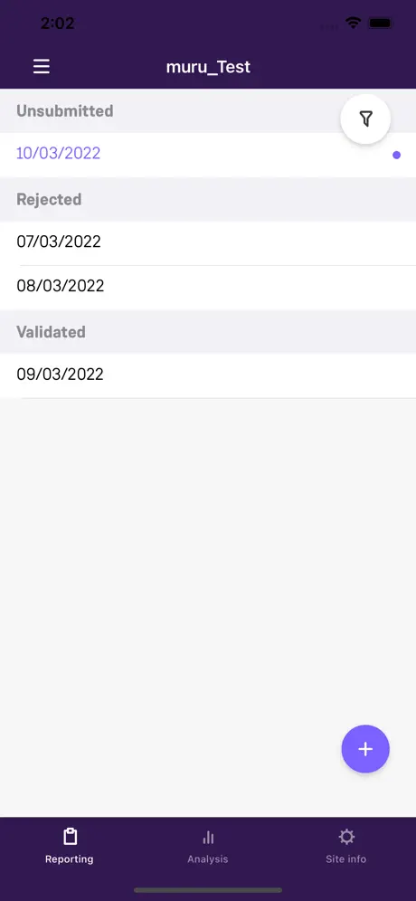
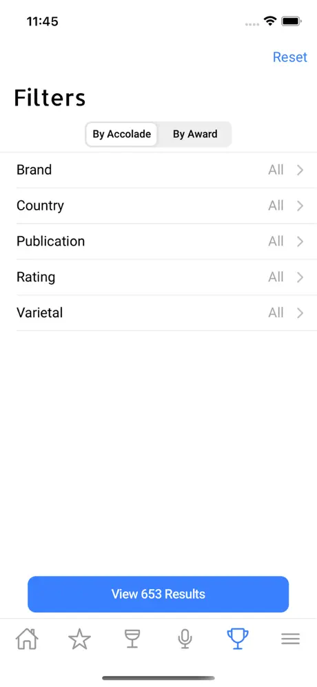

Four applications. All of them public. All of them downloadable.
Every case study links the live App Store listing, so you can verify the product exists and read its release history before you read a word I wrote about it. Each is structured the same way — Context & Scope, Architectural Blueprint, Engineering Breakthrough, Scope & Impact — with a real architecture diagram.
Why there are no repository links on these. All four are employer or client products and the source is assigned IP. Publishing it would be a breach, so I don't. What I can offer instead is the architecture in my own words, in depth, plus a whiteboard session any time. Public repositories appear only under Also built, where the code is mine.




App Store listing screenshots.
Hilti — multi-region firestop compliance in .NET MAUI
{{co_c}} — {{co_c_desc}}
Senior Developer & Mentor
One codebase resolving into {{f_regions}} regulatory variants — UL (US), ETA (Europe), DIN (Germany) — each with its own approvals corpus, selection logic and independently shipped features. Backed by an offline library of {{f_approvals}} digitised approvals with local full-text search, cloud-backed projects with an Owner/Editor/Viewer permission model, and engineering judgment requests submitted from the jobsite. Two shipped Hilti apps.
One platform lineage, one problem, six years.
Xamarin.iOS → Xamarin.Forms → .NET MAUI, applied the whole way to field software for people who cannot rely on a network. The framework changed twice; the problem never did.
-
{{co_a_dates}} · {{co_a_short}} → E. & J. GALLO WINERY
Learn the platform, not the abstraction
Xamarin.iOS against UIKit directly — lifecycle, memory semantics, retain cycles across the managed/native boundary. The foundation that made every later framework legible rather than magical.
-
{{co_b_dates}} · {{co_b_short}} → SIEMENS GAMESA
Learn offline-first for real
Retrofitting durable offline capture into a live product where a lost timesheet is a payment dispute. Where the conviction about local-first correctness stopped being theoretical.
-
{{co_c_dates}} · {{co_c_short}}
Learn product-scale architecture and how to transfer it
A codebase resolving into three regulatory regions, a compliance-grade offline corpus, and a review standard and reference implementations that other engineers built inside.
-
{{co_d_dates}} · {{co_d_short}}
Own it end to end
Full ownership of the mobile surface at a remote US startup, in the same industrial domains. This is the mode I want to keep working in.
Personal projects — the only code here that's mine to show.
Smaller and less polished than the shipped work above, and listed honestly rather than dressed up. Some are mobile, some are web. They're here because they're the one place you can actually read my code.
Pick any one of these and go deep.
Download the app, read the release history, then ask me the hardest question you have about how it works. That's the interview I want.